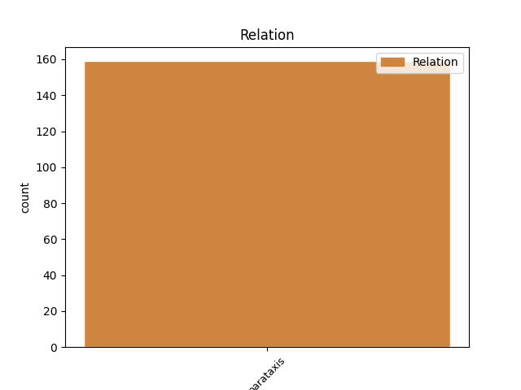
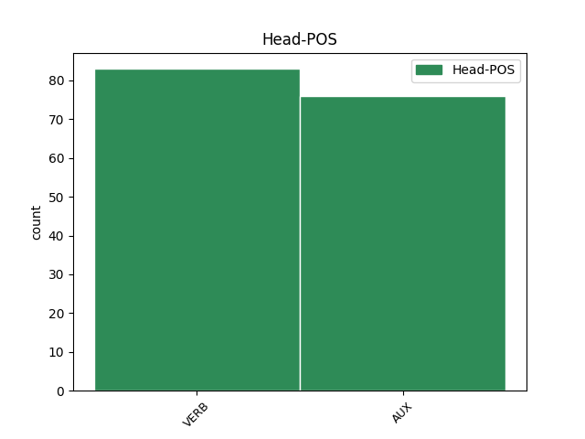
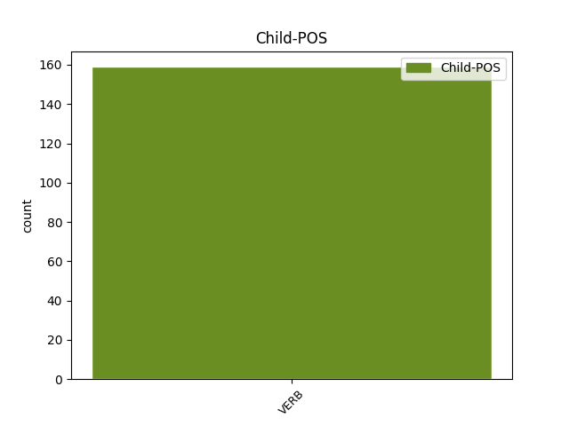

Distribution of features within this leaf



Agreement Rules sorted by frequency.
- When the dependent token is the parataxis(parataxis) of the head token, and the dependent token is VERB.
1 También _ _ _ _ 0 _ _ _
2 ha haber AUX AUX Mood=Ind|Number=Sing|Person=3|Tense=Pres|VerbForm=Fin 0 _ _ _
3 sorprendido _ _ _ _ 0 _ _ _
4 que _ _ _ _ 0 _ _ _
5 tres _ _ _ _ 0 _ _ _
6 de _ _ _ _ 0 _ _ _
7 cada _ _ _ _ 0 _ _ _
8 cuatro _ _ _ _ 0 _ _ _
9 jóvenes _ _ _ _ 0 _ _ _
10 consultados _ _ _ _ 0 _ _ _
11 se _ _ _ _ 0 _ _ _
12 muestre _ _ _ _ 0 _ _ _
13 partidario _ _ _ _ 0 _ _ _
14 de _ _ _ _ 0 _ _ _
15 penalizar _ _ _ _ 0 _ _ _
16 el _ _ _ _ 0 _ _ _
17 consumo _ _ _ _ 0 _ _ _
18 de _ _ _ _ 0 _ _ _
19 drogas _ _ _ _ 0 _ _ _
20 ( _ _ _ _ 0 _ _ _
21 un _ _ _ _ 0 _ _ _
22 44% _ _ _ _ 0 _ _ _
23 pide pedir VERB VERB Mood=Ind|Number=Sing|Person=3|Tense=Pres|VerbForm=Fin 2 parataxis _ _
24 su _ _ _ _ 0 _ _ _
25 prohibición _ _ _ _ 0 _ _ _
26 y _ _ _ _ 0 _ _ _
27 el _ _ _ _ 0 _ _ _
28 33% _ _ _ _ 0 _ _ _
29 sólo _ _ _ _ 0 _ _ _
30 las _ _ _ _ 0 _ _ _
31 duras _ _ _ _ 0 _ _ _
32 ) _ _ _ _ 0 _ _ _
33 . _ _ _ _ 0 _ _ _
Disagree Examples:
1 A _ _ _ _ 0 _ _ _
2 esa _ _ _ _ 0 _ _ _
3 cita _ _ _ _ 0 _ _ _
4 , _ _ _ _ 0 _ _ _
5 indicó indicar VERB VERB Mood=Ind|Number=Sing|Person=3|Tense=Past|VerbForm=Fin 7 parataxis _ SpaceAfter=No
6 , _ _ _ _ 0 _ _ _
7 acudirán acudir VERB VERB Mood=Ind|Number=Plur|Person=3|Tense=Fut|VerbForm=Fin 0 _ _ _
8 además _ _ _ _ 0 _ _ _
9 los _ _ _ _ 0 _ _ _
10 presidentes _ _ _ _ 0 _ _ _
11 Hugo _ _ _ _ 0 _ _ _
12 Banzer _ _ _ _ 0 _ _ _
13 , _ _ _ _ 0 _ _ _
14 de _ _ _ _ 0 _ _ _
15 Bolivia _ _ _ _ 0 _ _ _
16 , _ _ _ _ 0 _ _ _
17 Andrés _ _ _ _ 0 _ _ _
18 Pastrana _ _ _ _ 0 _ _ _
19 , _ _ _ _ 0 _ _ _
20 de _ _ _ _ 0 _ _ _
21 Colombia _ _ _ _ 0 _ _ _
22 , _ _ _ _ 0 _ _ _
23 Hugo _ _ _ _ 0 _ _ _
24 Chávez _ _ _ _ 0 _ _ _
25 , _ _ _ _ 0 _ _ _
26 de _ _ _ _ 0 _ _ _
27 Venezuela _ _ _ _ 0 _ _ _
28 y _ _ _ _ 0 _ _ _
29 Alberto _ _ _ _ 0 _ _ _
30 Fujimori _ _ _ _ 0 _ _ _
31 , _ _ _ _ 0 _ _ _
32 de _ _ _ _ 0 _ _ _
33 Perú _ _ _ _ 0 _ _ _
34 , _ _ _ _ 0 _ _ _
35 que _ _ _ _ 0 _ _ _
36 es _ _ _ _ 0 _ _ _
37 el _ _ _ _ 0 _ _ _
38 anfitrión _ _ _ _ 0 _ _ _
39 . _ _ _ _ 0 _ _ _
1 El _ _ _ _ 0 _ _ _
2 enunciado _ _ _ _ 0 _ _ _
3 solemne _ _ _ _ 0 _ _ _
4 ( _ _ _ _ 0 _ _ _
5 - _ _ _ _ 0 _ _ _
6 La _ _ _ _ 0 _ _ _
7 Historia _ _ _ _ 0 _ _ _
8 cuenta _ _ _ _ 0 _ _ _
9 que _ _ _ _ 0 _ _ _
10 el _ _ _ _ 0 _ _ _
11 emperador _ _ _ _ 0 _ _ _
12 Nerón _ _ _ _ 0 _ _ _
13 visitó _ _ _ _ 0 _ _ _
14 los _ _ _ _ 0 _ _ _
15 Alpes _ _ _ _ 0 _ _ _
16 en _ _ _ _ 0 _ _ _
17 el _ _ _ _ 0 _ _ _
18 otoño _ _ _ _ 0 _ _ _
19 del _ _ _ _ 0 _ _ _
20 año _ _ _ _ 0 _ _ _
21 sesenta _ _ _ _ 0 _ _ _
22 y _ _ _ _ 0 _ _ _
23 uno _ _ _ _ 0 _ _ _
24 después _ _ _ _ 0 _ _ _
25 de _ _ _ _ 0 _ _ _
26 Cristo _ _ _ _ 0 _ _ _
27 - _ _ _ _ 0 _ _ _
28 ) _ _ _ _ 0 _ _ _
29 inmediatamente _ _ _ _ 0 _ _ _
30 se _ _ _ _ 0 _ _ _
31 deshace deshacer VERB VERB Mood=Ind|Number=Sing|Person=3|Tense=Pres|VerbForm=Fin 0 _ _ _
32 en _ _ _ _ 0 _ _ _
33 un _ _ _ _ 0 _ _ _
34 chisporroteo _ _ _ _ 0 _ _ _
35 de _ _ _ _ 0 _ _ _
36 colorines _ _ _ _ 0 _ _ _
37 ( _ _ _ _ 0 _ _ _
38 - _ _ _ _ 0 _ _ _
39 iba ir VERB VERB Mood=Ind|Number=Sing|Person=3|Tense=Imp|VerbForm=Fin 31 parataxis _ _
40 con _ _ _ _ 0 _ _ _
41 algunos _ _ _ _ 0 _ _ _
42 cortesanos _ _ _ _ 0 _ _ _
43 , _ _ _ _ 0 _ _ _
44 que _ _ _ _ 0 _ _ _
45 murmuraban _ _ _ _ 0 _ _ _
46 porque _ _ _ _ 0 _ _ _
47 tenían _ _ _ _ 0 _ _ _
48 frío _ _ _ _ 0 _ _ _
49 , _ _ _ _ 0 _ _ _
50 y _ _ _ _ 0 _ _ _
51 con _ _ _ _ 0 _ _ _
52 multitud _ _ _ _ 0 _ _ _
53 de _ _ _ _ 0 _ _ _
54 poetas _ _ _ _ 0 _ _ _
55 , _ _ _ _ 0 _ _ _
56 músicos _ _ _ _ 0 _ _ _
57 , _ _ _ _ 0 _ _ _
58 esclavos _ _ _ _ 0 _ _ _
59 , _ _ _ _ 0 _ _ _
60 soldados _ _ _ _ 0 _ _ _
61 y _ _ _ _ 0 _ _ _
62 bufones _ _ _ _ 0 _ _ _
63 - _ _ _ _ 0 _ _ _
64 ) _ _ _ _ 0 _ _ _
65 . _ _ _ _ 0 _ _ _
1 En _ _ _ _ 0 _ _ _
2 el _ _ _ _ 0 _ _ _
3 relato _ _ _ _ 0 _ _ _
4 el _ _ _ _ 0 _ _ _
5 léxico _ _ _ _ 0 _ _ _
6 se _ _ _ _ 0 _ _ _
7 rebaja rebajar VERB VERB Mood=Ind|Number=Sing|Person=3|Tense=Pres|VerbForm=Fin 0 _ _ _
8 desde _ _ _ _ 0 _ _ _
9 abstracciones _ _ _ _ 0 _ _ _
10 posibles _ _ _ _ 0 _ _ _
11 a _ _ _ _ 0 _ _ _
12 realidades _ _ _ _ 0 _ _ _
13 vitales _ _ _ _ 0 _ _ _
14 y _ _ _ _ 0 _ _ _
15 el _ _ _ _ 0 _ _ _
16 conjunto _ _ _ _ 0 _ _ _
17 tiene _ _ _ _ 0 _ _ _
18 un _ _ _ _ 0 _ _ _
19 aire _ _ _ _ 0 _ _ _
20 de _ _ _ _ 0 _ _ _
21 feria _ _ _ _ 0 _ _ _
22 ( _ _ _ _ 0 _ _ _
23 - _ _ _ _ 0 _ _ _
24 Livia _ _ _ _ 0 _ _ _
25 y _ _ _ _ 0 _ _ _
26 Druso _ _ _ _ 0 _ _ _
27 bajaron bajar VERB VERB Mood=Ind|Number=Plur|Person=3|Tense=Past|VerbForm=Fin 7 parataxis _ _
28 de _ _ _ _ 0 _ _ _
29 las _ _ _ _ 0 _ _ _
30 alturas _ _ _ _ 0 _ _ _
31 como _ _ _ _ 0 _ _ _
32 Dios _ _ _ _ 0 _ _ _
33 les _ _ _ _ 0 _ _ _
34 dio _ _ _ _ 0 _ _ _
35 a _ _ _ _ 0 _ _ _
36 entender _ _ _ _ 0 _ _ _
37 , _ _ _ _ 0 _ _ _
38 pero _ _ _ _ 0 _ _ _
39 tratando _ _ _ _ 0 _ _ _
40 de _ _ _ _ 0 _ _ _
41 no _ _ _ _ 0 _ _ _
42 caer _ _ _ _ 0 _ _ _
43 se _ _ _ _ 0 _ _ _
44 ni _ _ _ _ 0 _ _ _
45 hacer _ _ _ _ 0 _ _ _
46 el _ _ _ _ 0 _ _ _
47 ridículo _ _ _ _ 0 _ _ _
48 , _ _ _ _ 0 _ _ _
49 porque _ _ _ _ 0 _ _ _
50 ya _ _ _ _ 0 _ _ _
51 no _ _ _ _ 0 _ _ _
52 eran _ _ _ _ 0 _ _ _
53 cortesanos _ _ _ _ 0 _ _ _
54 , _ _ _ _ 0 _ _ _
55 sino _ _ _ _ 0 _ _ _
56 reyes _ _ _ _ 0 _ _ _
57 . _ _ _ _ 0 _ _ _
1 Sus _ _ _ _ 0 _ _ _
2 criaturas _ _ _ _ 0 _ _ _
3 representan representar VERB VERB Mood=Ind|Number=Plur|Person=3|Tense=Pres|VerbForm=Fin 0 _ _ _
4 unos _ _ _ _ 0 _ _ _
5 papeles _ _ _ _ 0 _ _ _
6 que _ _ _ _ 0 _ _ _
7 les _ _ _ _ 0 _ _ _
8 vienen _ _ _ _ 0 _ _ _
9 grandes _ _ _ _ 0 _ _ _
10 ; _ _ _ _ 0 _ _ _
11 cualquier _ _ _ _ 0 _ _ _
12 monarca _ _ _ _ 0 _ _ _
13 ha _ _ _ _ 0 _ _ _
14 cobrado _ _ _ _ 0 _ _ _
15 impuestos _ _ _ _ 0 _ _ _
16 , _ _ _ _ 0 _ _ _
17 pero _ _ _ _ 0 _ _ _
18 aquí _ _ _ _ 0 _ _ _
19 se _ _ _ _ 0 _ _ _
20 pagan _ _ _ _ 0 _ _ _
21 con _ _ _ _ 0 _ _ _
22 quesos _ _ _ _ 0 _ _ _
23 ; _ _ _ _ 0 _ _ _
24 la _ _ _ _ 0 _ _ _
25 guerra _ _ _ _ 0 _ _ _
26 no _ _ _ _ 0 _ _ _
27 es _ _ _ _ 0 _ _ _
28 hermosa _ _ _ _ 0 _ _ _
29 , _ _ _ _ 0 _ _ _
30 como _ _ _ _ 0 _ _ _
31 cantaron _ _ _ _ 0 _ _ _
32 los _ _ _ _ 0 _ _ _
33 poetas _ _ _ _ 0 _ _ _
34 , _ _ _ _ 0 _ _ _
35 sino _ _ _ _ 0 _ _ _
36 triste _ _ _ _ 0 _ _ _
37 y _ _ _ _ 0 _ _ _
38 sórdida _ _ _ _ 0 _ _ _
39 , _ _ _ _ 0 _ _ _
40 carece _ _ _ _ 0 _ _ _
41 de _ _ _ _ 0 _ _ _
42 grandeza _ _ _ _ 0 _ _ _
43 , _ _ _ _ 0 _ _ _
44 pues _ _ _ _ 0 _ _ _
45 aquí _ _ _ _ 0 _ _ _
46 está _ _ _ _ 0 _ _ _
47 dentro _ _ _ _ 0 _ _ _
48 de _ _ _ _ 0 _ _ _
49 una _ _ _ _ 0 _ _ _
50 vulgaridad _ _ _ _ 0 _ _ _
51 doméstica _ _ _ _ 0 _ _ _
52 ; _ _ _ _ 0 _ _ _
53 los _ _ _ _ 0 _ _ _
54 soldados _ _ _ _ 0 _ _ _
55 nunca _ _ _ _ 0 _ _ _
56 han _ _ _ _ 0 _ _ _
57 sido _ _ _ _ 0 _ _ _
58 paradigmas _ _ _ _ 0 _ _ _
59 de _ _ _ _ 0 _ _ _
60 espiritualidad _ _ _ _ 0 _ _ _
61 , _ _ _ _ 0 _ _ _
62 pero _ _ _ _ 0 _ _ _
63 aquí _ _ _ _ 0 _ _ _
64 están _ _ _ _ 0 _ _ _
65 levantando _ _ _ _ 0 _ _ _
66 pesas _ _ _ _ 0 _ _ _
67 en _ _ _ _ 0 _ _ _
68 camiseta _ _ _ _ 0 _ _ _
69 o _ _ _ _ 0 _ _ _
70 haciendo _ _ _ _ 0 _ _ _
71 ejercicios _ _ _ _ 0 _ _ _
72 respiratorios _ _ _ _ 0 _ _ _
73 ; _ _ _ _ 0 _ _ _
74 el _ _ _ _ 0 _ _ _
75 heroísmo _ _ _ _ 0 _ _ _
76 se _ _ _ _ 0 _ _ _
77 ha _ _ _ _ 0 _ _ _
78 vaciado _ _ _ _ 0 _ _ _
79 de _ _ _ _ 0 _ _ _
80 grandeza _ _ _ _ 0 _ _ _
81 ( _ _ _ _ 0 _ _ _
82 " _ _ _ _ 0 _ _ _
83 Druso _ _ _ _ 0 _ _ _
84 ordenó ordenar VERB VERB Mood=Ind|Number=Sing|Person=3|Tense=Past|VerbForm=Fin 3 parataxis _ _
85 a _ _ _ _ 0 _ _ _
86 la _ _ _ _ 0 _ _ _
87 tropa _ _ _ _ 0 _ _ _
88 que _ _ _ _ 0 _ _ _
89 plantara _ _ _ _ 0 _ _ _
90 en _ _ _ _ 0 _ _ _
91 la _ _ _ _ 0 _ _ _
92 cima _ _ _ _ 0 _ _ _
93 una _ _ _ _ 0 _ _ _
94 bandera _ _ _ _ 0 _ _ _
95 . _ _ _ _ 0 _ _ _
96 La _ _ _ _ 0 _ _ _
97 operación _ _ _ _ 0 _ _ _
98 costó _ _ _ _ 0 _ _ _
99 la _ _ _ _ 0 _ _ _
100 vida _ _ _ _ 0 _ _ _
101 a _ _ _ _ 0 _ _ _
102 uno _ _ _ _ 0 _ _ _
103 de _ _ _ _ 0 _ _ _
104 los _ _ _ _ 0 _ _ _
105 soldados _ _ _ _ 0 _ _ _
106 , _ _ _ _ 0 _ _ _
107 que _ _ _ _ 0 _ _ _
108 aplastó _ _ _ _ 0 _ _ _
109 una _ _ _ _ 0 _ _ _
110 liebre _ _ _ _ 0 _ _ _
111 al _ _ _ _ 0 _ _ _
112 caer _ _ _ _ 0 _ _ _
113 " _ _ _ _ 0 _ _ _
114 ) _ _ _ _ 0 _ _ _
115 . _ _ _ _ 0 _ _ _
1 Consiguió conseguir VERB VERB Mood=Ind|Number=Sing|Person=3|Tense=Past|VerbForm=Fin 0 _ _ _
2 , _ _ _ _ 0 _ _ _
3 me _ _ _ _ 0 _ _ _
4 dicen decir VERB VERB Mood=Ind|Number=Plur|Person=3|Tense=Pres|VerbForm=Fin 1 parataxis _ SpaceAfter=No
5 , _ _ _ _ 0 _ _ _
6 organizar _ _ _ _ 0 _ _ _
7 el _ _ _ _ 0 _ _ _
8 suburbio _ _ _ _ 0 _ _ _
9 , _ _ _ _ 0 _ _ _
10 y _ _ _ _ 0 _ _ _
11 sacar _ _ _ _ 0 _ _ _
12 lo _ _ _ _ 0 _ _ _
13 de _ _ _ _ 0 _ _ _
14 la _ _ _ _ 0 _ _ _
15 violencia _ _ _ _ 0 _ _ _
16 y _ _ _ _ 0 _ _ _
17 el _ _ _ _ 0 _ _ _
18 salvajismo _ _ _ _ 0 _ _ _
19 . _ _ _ _ 0 _ _ _